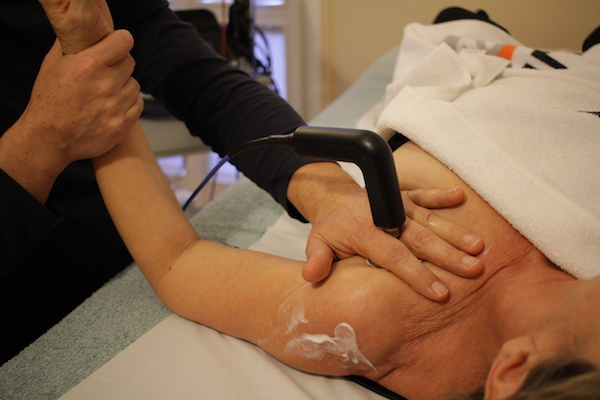

Tecar Terapia®
Effetti terapeutici
La Tecar Terapia® è una nuova metodologia di diffusione di energie dolci che ha cambiato il modo di operare e i tempi di recupero in fisioterapia. Grazie a una sofisticata apparecchiatura elettronica, attiva la bio-stimolazione dei tessuti erogando energia biocompatibile con i processi fisiologici del corpo. La Tecar® genera una forte vasodilatazione e un incremento della circolazione sanguigna che agevola la progressiva scomparsa del dolore, la riduzione delle contratture muscolari e il riassorbimento degli edemi.
Patalogie trattate
La Tecar terapia® è ideale nella riabilitazione e nelle patologie osteoarticolari acute e croniche
come distorsioni,
lesioni tendinee, tendiniti e borsiti, esiti di traumi ossei e legamentosi, distrazioni
osteoarticolari acute e
recidivanti, artralgie croniche di varia eziologia.
È attiva in diverse forme di osteoporosi e programmi riabilitativi post chirurgici, in particolare
dopo interventi di
artroprotesi come condropatia rotulea, coxartrosi, algie croniche, pubalgia cronica, capsulite
adesiva, sperone
calcaneare.
Cos'è e come funziona
Lo studio e lo sviluppo della Tecar® è iniziato nel settore ateltico sportivo, dove viene usata per accelerare il recupero di traumi e infiammazioni. Con una macchina elettronica e un diffusore collegato si trasferisce energia biocompatibile che stimola intensamente i tessuti, accelerando l’eliminazione dei cataboliti infiammatori in modo del tutto naturale e fisiologico. La tecnologia Human Tecar®, partendo dalla diagnosi medica, permette inoltre all’operatore di personalizzare i trattamenti sulla base della risposta dei tessuti interessati, adattandosi alle sensazioni del paziente e all’evolversi della sua condizione. La Tecar® ha tre caratteristiche principali:
- Cede energia biocompatibile che si attiva sulle soglie energetiche del metabolismo cellulare e subcellulare.
- È efficace anche sui tessuti fibrosi, solitamente poco reattivi con i trattamenti convenzionali.
- Può essere utilizzata in modo diverso in base alla tipologia del tessuto (muscolare e/o fibro connettivale) connessa alla duplice modalità tecnologica capacitiva e resistiva.
Controindicazioni
La Tecar® è una terapia che non è adatta alle persone provviste di pacemaker e alle donne incinte. Prima di sottoporsi alle sedute il paziente dovrà sottoporre al medico la documentazione relativa ai traumi o alle patologie da trattare.
Trattamento
Il paziente si stende sul lettino e la zona da trattare, dopo essere stata massaggiata con creme specifiche, viene percorsa manualmente con un irradiatore che dispensa l’energia specifica per il tipo di patologia. Non comporta alcun dolore. Ogni seduta può durare da 30 a 60 minuti.